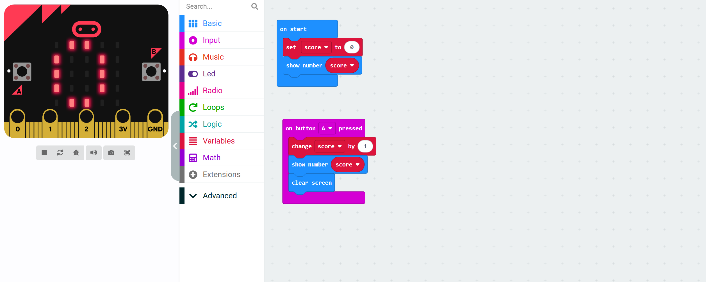
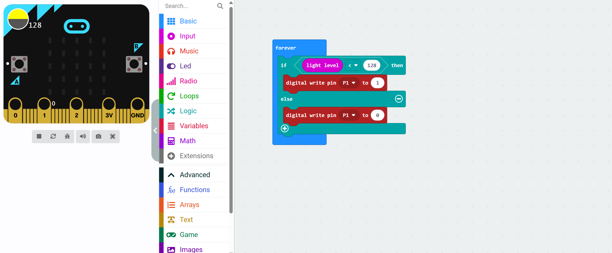
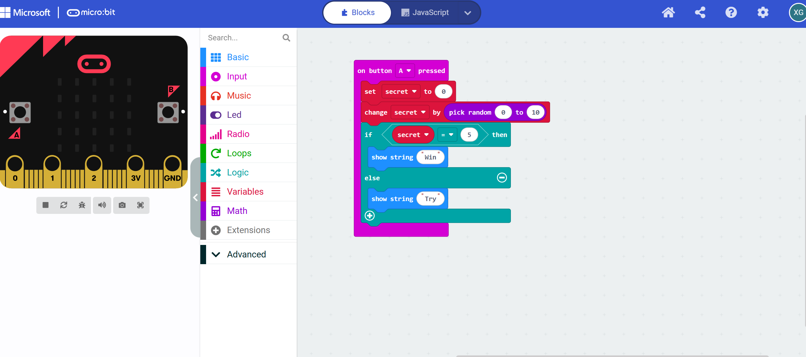

Task 1
What was the issue?
It just keeps showing 0.
How did you solve it?
I set an unknown number "score" to 0. Each time the A button is pressed, this unknown number increases by 1 and is displayed. Then I added a screen-clearing module, so it only shows once and will never show again.
Share a screenshot of the solution:
Task 2
What was the issue?
The flashlight turns on when it's dark but never turns off again when the room brightens.
How did you solve it?
I set it up so that when the room's brightness increases, its pin will turn to 0, corresponding to the off state. Thus, when the room's brightness rises, the flashlight will automatically turn off.
Share a screenshot of the solution:
Task 3
What was the issue?
It starts by selecting a number, and this number is fixed. Even if you keep pressing A, as long as the number selected at the beginning is not 5, it will always display "Try".
How did you solve it?
I set it up so that whenever A is pressed, a random number between 0 and 10 will be generated. This way, each time A is pressed, a new number will be produced, unlike the original code which merely keeps repeating the initial result without variation.
Share a screenshot of the solution:
